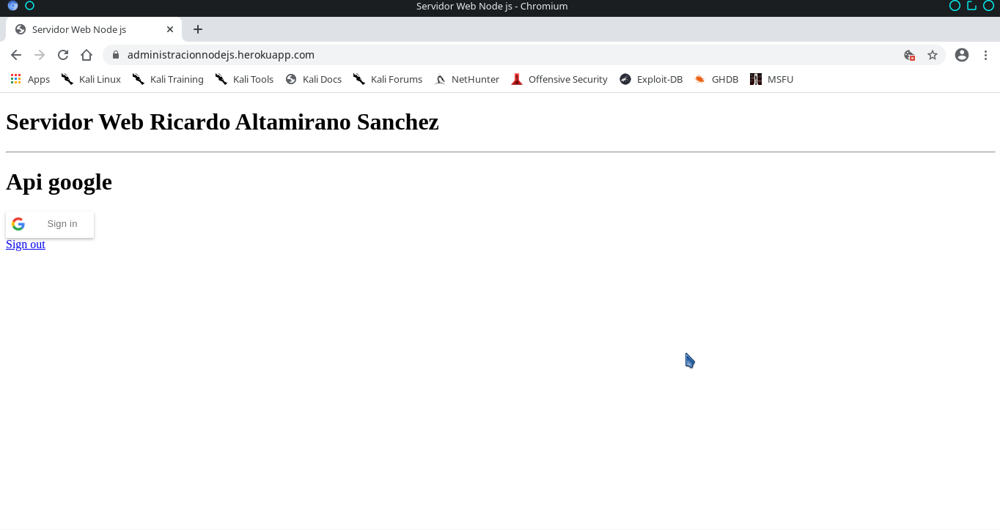
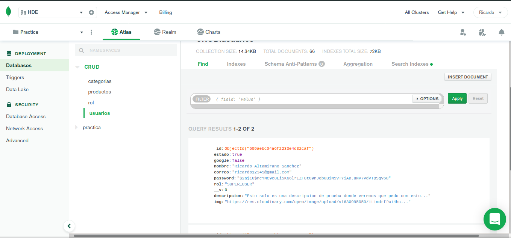

Descripcion
Saber mas
Este proyecto se diseño para poder adminstrar usuarios y productos con seguridad al manejar la informacion y donde se muy rapido en obtenerla donse se realizo programacion asicrona y a eventos. Donde se creo un servidor con node js y las peticiones en formas de apis donde esta conectada con otros servidores como es monog atlas y cloudinary para el servidor de archivos y se creo una tienda virtual para mostar los resultados.El proyecto se realizo con el a fan de ser compatible con cualquier plataforma y que suminstre informacion de formar segura y con encryptacion para proteger la informacion.
Imagenes
Sercidor Node & Servidor Mongo Atlas
Es nuestro servidor con node js aun falta la documentacion en la parte de frente
pero este es el repositorio por si quieres hechar un vistazo de su configuracion
Ir repositorio Servidor Nodejs dar click aqui
Este es nuestro servidor Mongo en Atlas donde podemos Administrar los datos y poner privilegios y danlo roles.Podemos dar accesso a que ips pueden acceder a nuestro sitio como si fuera un cors